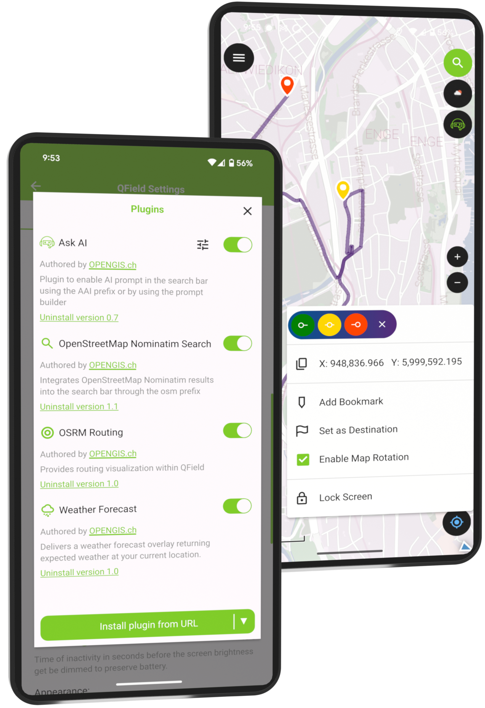
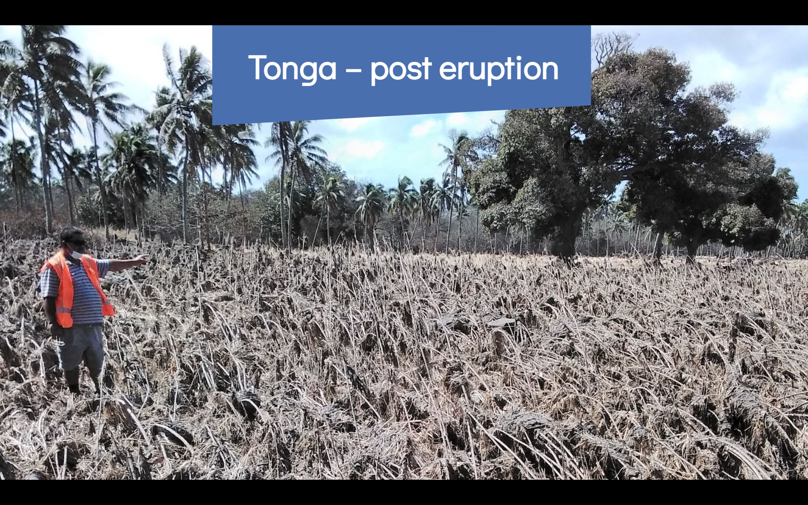
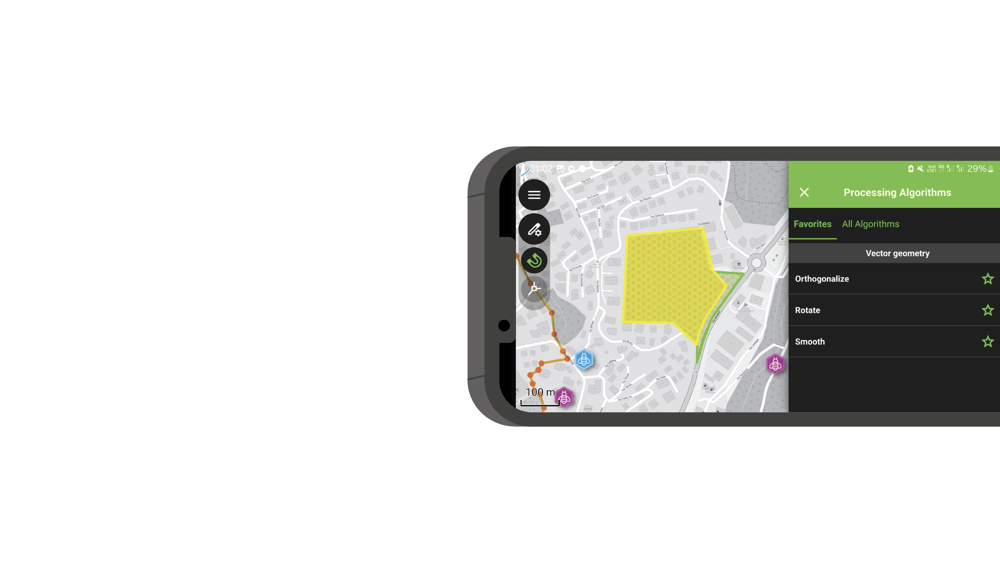
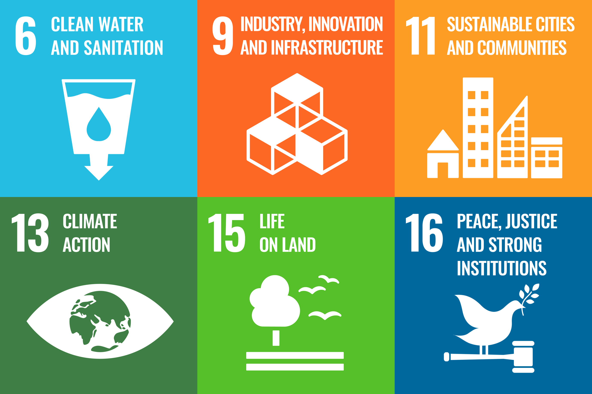
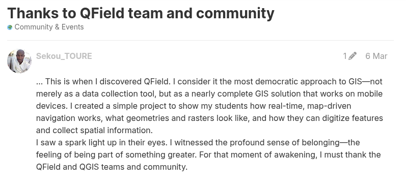
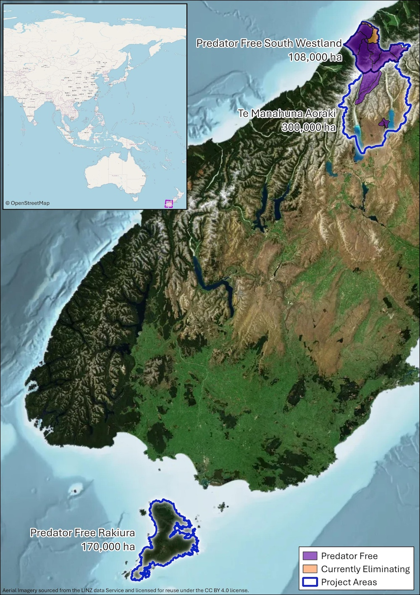
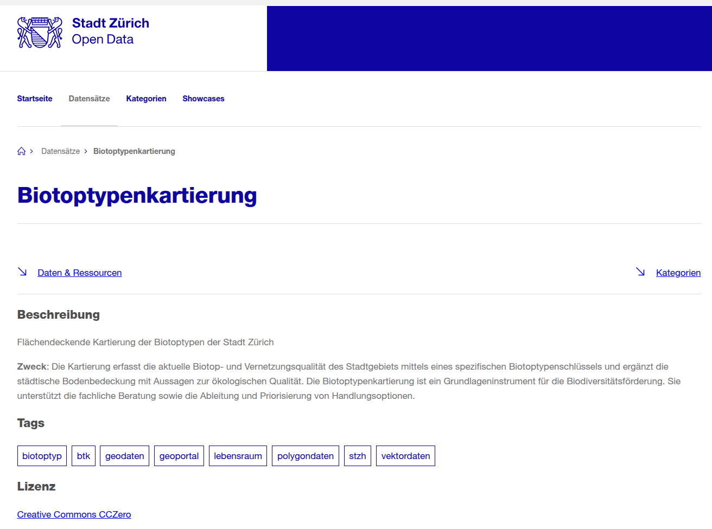
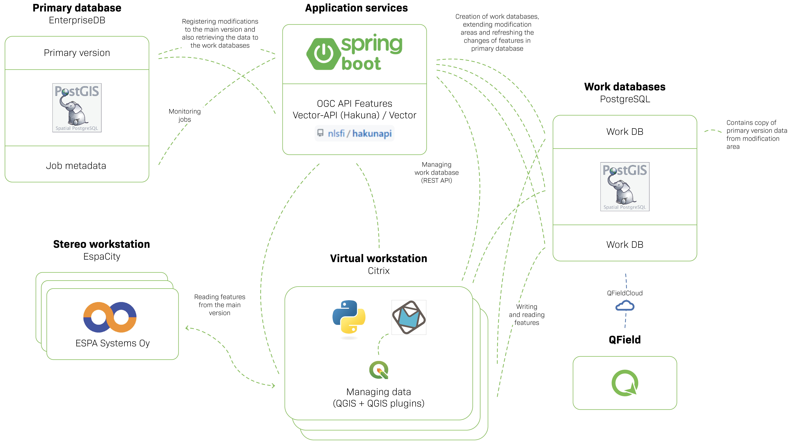

QField: Software as Allmende
Born in Switzerland. Used by the world.

Same tool. Different disaster.
TONGA 2022

QField
Collect | collaborate | customise
- 📍 Collect data — fast, accurate, offline
- ☁️ Collaborate — sync seamlessly with QFieldCloud
- 🛠️ Customise — forms, tools, plugins, your way
- 🌍 Forests, cities, infrastructure, disaster zones, …

QGIS AND QFIELD ARE
DIGITAL PUBLIC GOODS
- ✅ QField recognized by the Digital Public Goods Alliance since April 2024
- 🎯 Open source, privacy-respecting, no vendor lock-in
- 🌱 Aligned with the UN Sustainable Development Goals
- 🏋 Builds upon QGIS, another DPG

The DPG effect

Conservation at scale
ZIP, NEW ZEALAND
Eradicating invasive predators to protect native wildlife.
408,000 ha · 80 staff · 20,000 field devices · 5,000,000 possums → 2

European rail infrastructure
DEUTSCHE BAHN | SBB (CESM)
QField for infrastructure field operations

Routine public administration
GRÜNSTADT ZÜRICH
Biotops, Urban tree and green space management

Why this model works
Public money → public code
- 🏢 OPENGIS.ch sustains QField commercially — support, customisation, cloud
- 🔓 The software stays free. Always.
- 🔁 Every deployment makes the next one easier
- 🇨🇭 Data sovereignty: your data, your code, no vendor lock-in
- ✅ Auditable by anyone — including regulators
Not charity. Not subsidy. A viable model.
NATIONAL LAND SURVEY
FINLAND

In 2025, Finland became
the first country in the world
to run national topographic data production
on fully open source GIS
The field software was created in Laax.
The question for Switzerland
The law is clear. EMBAG mandates it.
Finland made a strategic choice.
New Zealand made a strategic choice.
Switzerland hosts the foundation, the company,
and the most widely deployed open GIS on the planet.
What’s still in the way?